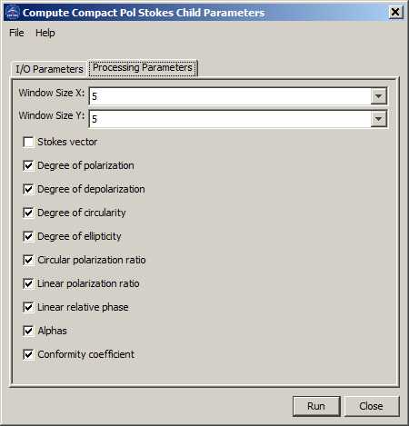

Compact Polarimetric Stokes Parameter Generation Operator
This
operator computes the following Stokes child parameters:
- degree of polarization
- degree of depolarization
- degree of circularity
- degree of ellipticity
- circular polarization ratio
- linear polarization ratio
- linear relative phase
- alphas
- conformity coefficient
Input and Output
- The
input to this operator should be a simulated compact polarimetric SAR
product in complex scattering vector or complex covariance matrix
format.
- The output of this operator can be Stokes vector and user selected Stokes child parameters.
Parameters Used
The following processing parameters are needed (see Figure 1):
- Window Size X: X dimension of the sliding window used in computing the mean covariance matrix
- Window Size Y: Y dimension of the sliding window used in computing the mean covariance matrix
- Stokes vector check box
- degree of polarization check box
- degree of depolarization check box
- degree of circularity check box
- degree of ellipticity check box
- circular polarization ratio check box
- linear polarization ratio check box
- linear relative phase check box
- alphas check box
- conformity coefficient check box

Figure 1. Dialog box for
Compact Polarimetric Stokes Parameter Generation operator
Reference:
[1] R. K. Raney, P. Spudis, B. Bussey, J. R. Jensen, B. Marinelli, P. McKerracher, R. Schulze, H. Sequeira, and H.
Winters,
"Compact Polarimetry at the Moon: The Mini-RF Radars", POLinSAR, Frascati, Italy, 24-29 Jan. 2011.
.